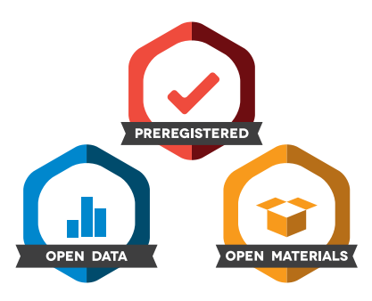

Rich Ramsey
About
Publications
People
Talks
Posts
Tutorials
Resources
Teaching
Posts
a blog about chasing rainbows
Categories
All
(3)
Data analysis
(1)
David Bowie
(1)
Metascience
(2)
Preregistration
(1)
Reproducibility
(2)
Statistics
(3)
Order By
Default
Title
Date - Oldest
Date - Newest
Author
A general data analysis workflow using Bayesian multi-level regression
A brief outline of our approach to data analysis in recent years
Data analysis
Statistics
Pre-register predictions and specific analyses in advance
Jul 19, 2023
Richard Ramsey

Open science for psychology and cognitive neuroscience
A short summary of our lab’s efforts and ambitions to embrace recent deveopments in methods and meta-science
Reproducibility
Metascience
Statistics
Preregistration
A cornerstone of scientific study is the ability to accumulate knowledge over time in a progressive manner. However, threats exist that limit the steady accumulation of…
May 16, 2023
Richard Ramsey, Emily S. Cross
A blog about (not) chasing rainbows
I have started writing a reluctant blog about chasing rainbows
Reproducibility
Metascience
Statistics
David Bowie
Two reasons.
May 10, 2023
Richard Ramsey
No matching items